Portfolio / Mobile, web, and systems work
Designing software that turns complex workflows into calm, useful experiences.
I build products where algorithms, interfaces, and operational logic need to work together cleanly. My focus sits at the intersection of mobile health, scheduling systems, and data-heavy tools.
Android Studio
Web Interfaces
Scheduling Engines
Data Visualization
UX Systems
Patient and caregiver workflows with medication tracking, stock awareness, and emergency handling.
Timetable planning, classroom assignment, and reservation flows built for academic operations.
Projects
Mobile, scheduling, data, and systems work shaped around real workflows.
A collection of practical software projects that combine product thinking, clear interfaces, algorithms, and useful operational logic.
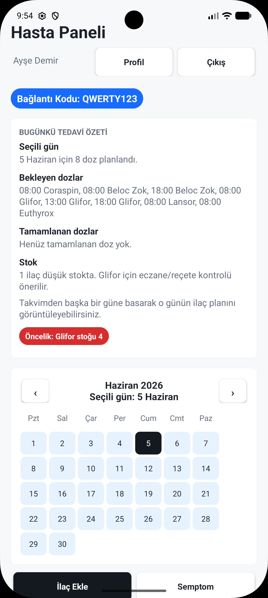
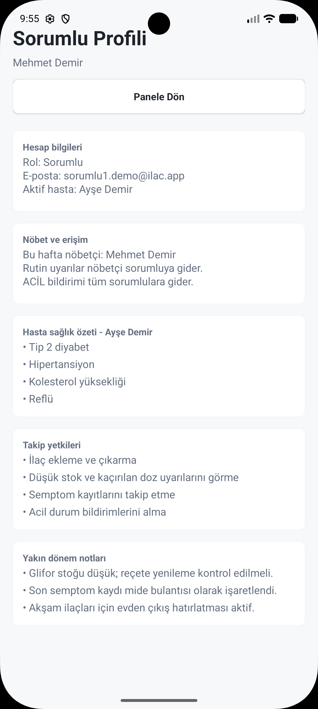
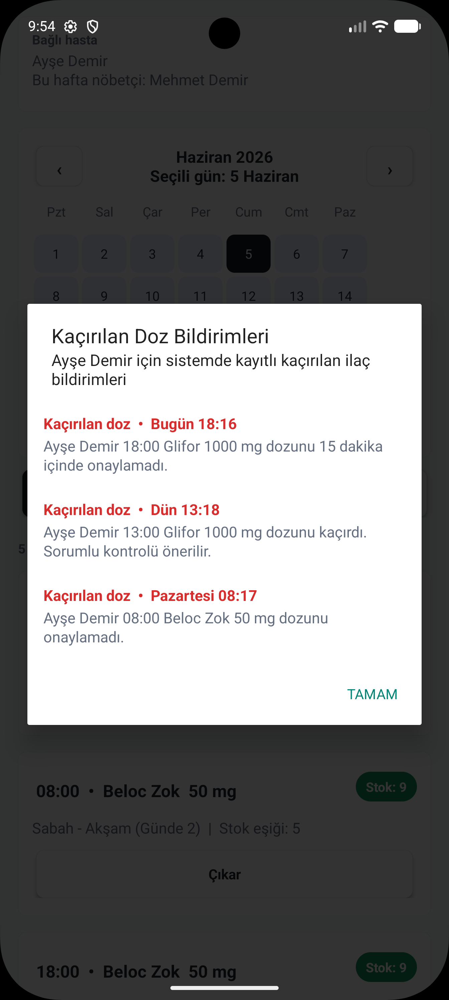
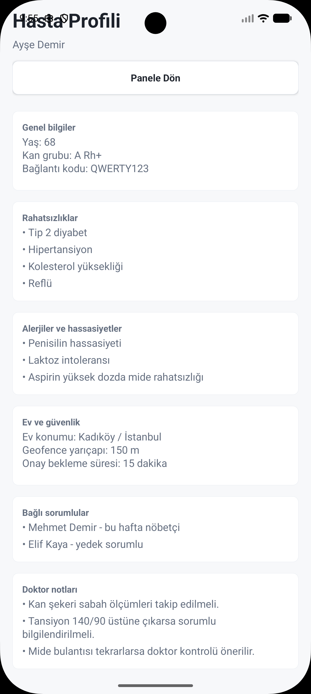
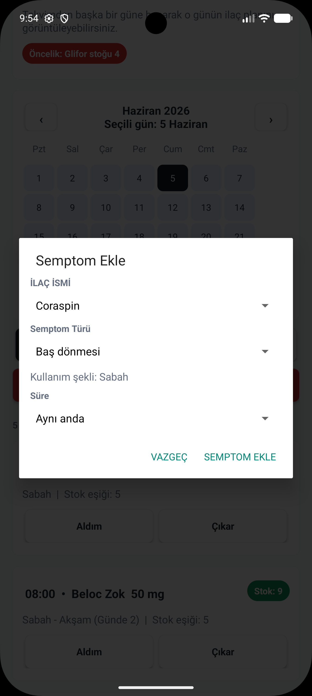
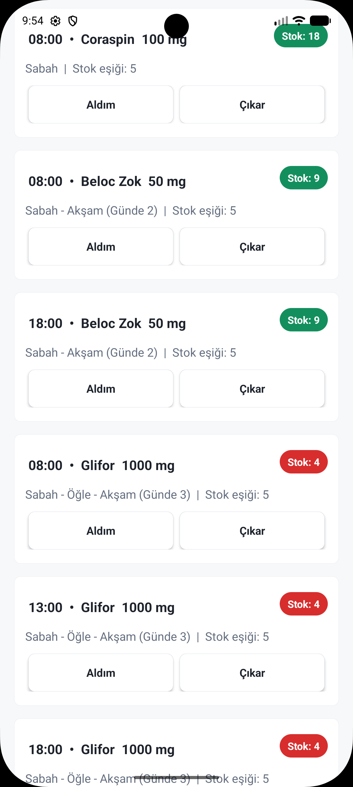
Mobile health / Android Studio
İlaç Asistanım
A mobile medication management demo app designed to support elderly and chronically ill patients while reducing the tracking burden on caregivers.
Android Studio
Java
Health Workflow
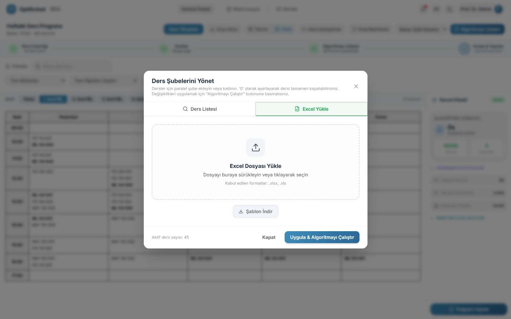
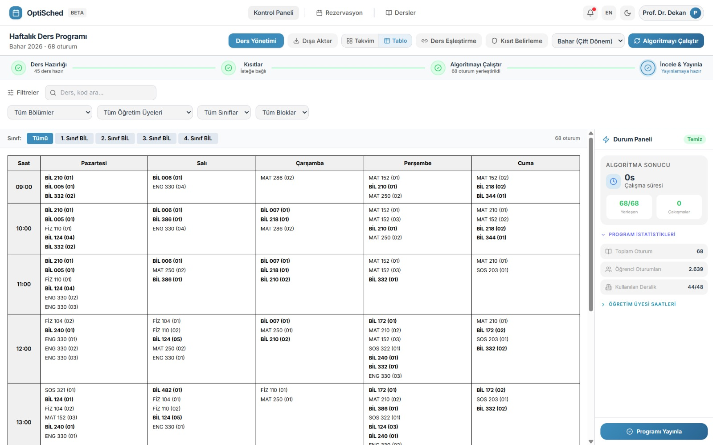
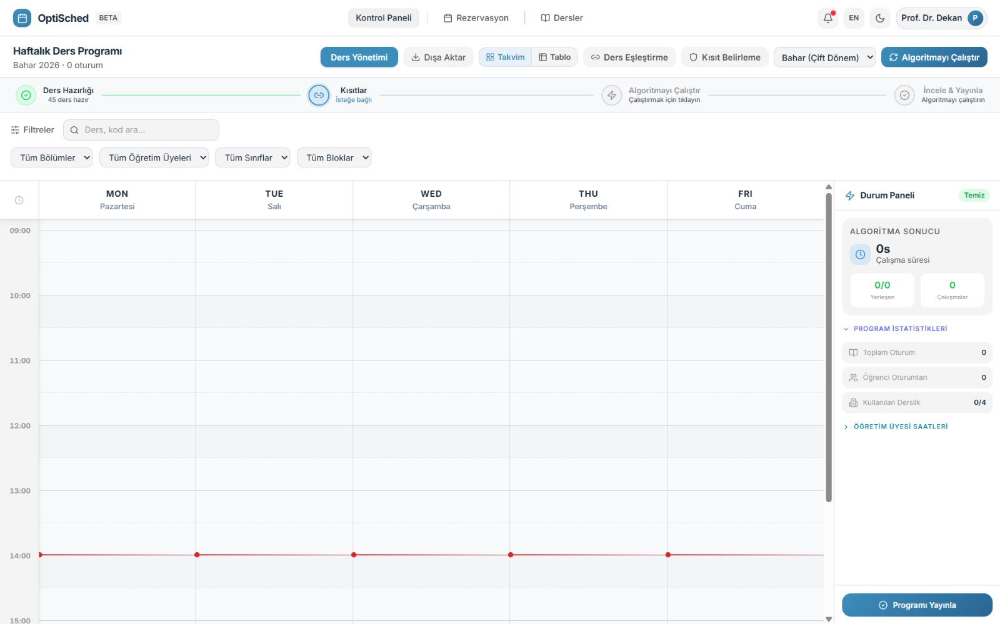
Scheduling / room allocation
OptiSched
A scheduling and room assignment solution for academic timetable planning, classroom reservations, course organization, and conflict reduction.
Scheduling
Room Assignment
Optimization
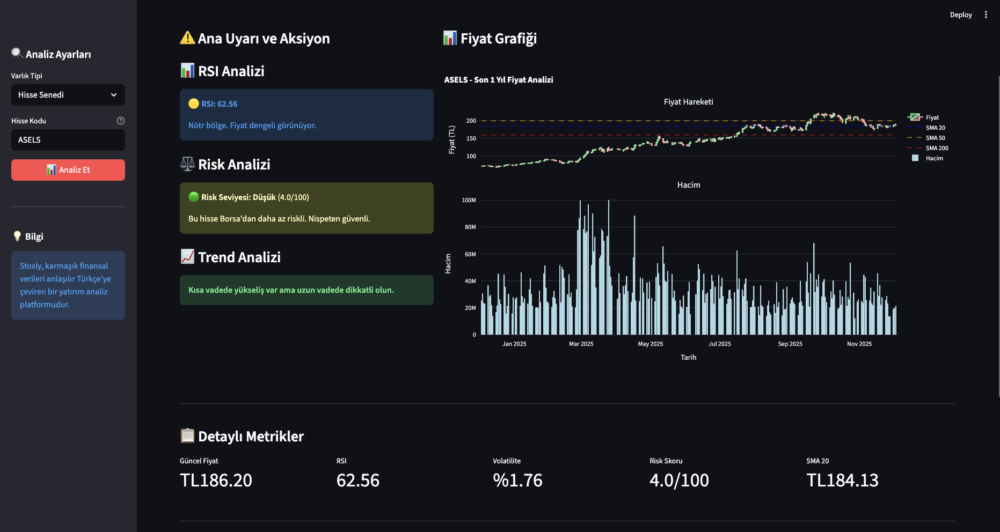
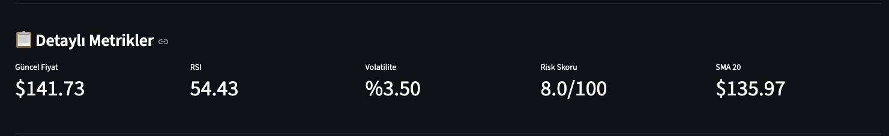
Financial analysis platform
Stoxly
A data visualization and investment analysis platform that turns real-time market data into clear performance reports and portfolio insights.
Financial Data
Visualization
UX
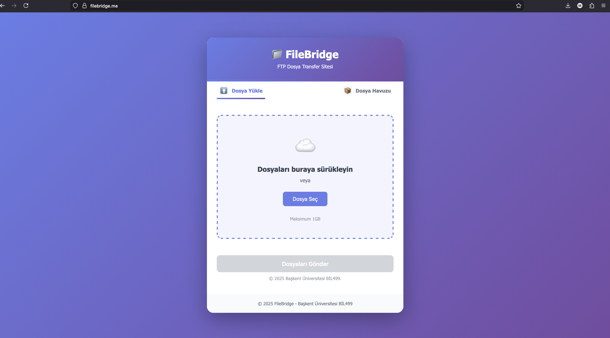
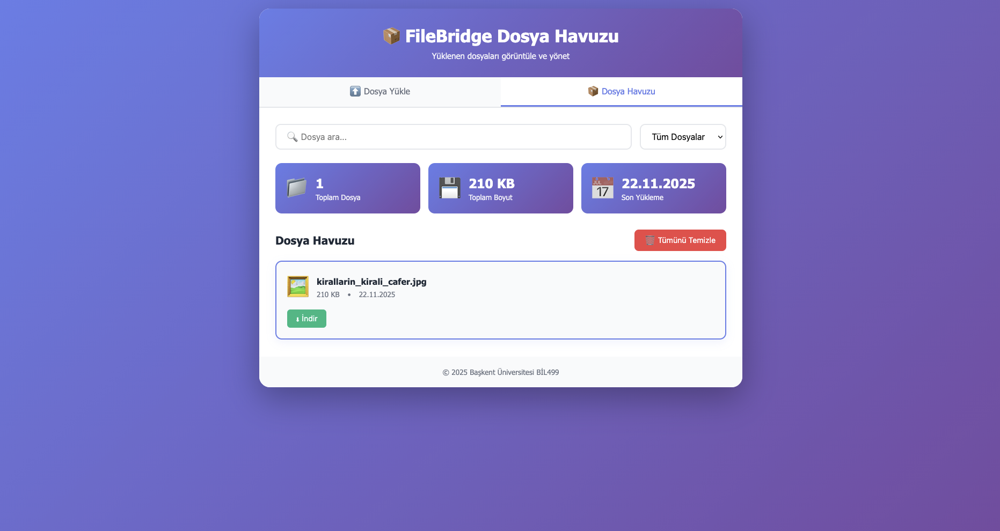
Secure file transfer
File Bridge
An SFTP client focused on secure transfers, session handling, and efficient file movement through a practical network programming workflow.
SFTP
SSH
Security
Market analytics
Financial Asset Performance Analyzer
A Python tool that pulls stock data, analyzes historical performance, and produces statistical summaries such as means, standard deviations, and percentiles.
Python
Plotly
Yahoo Finance API
Simulation
Traffic Light Control Simulation
A software-based traffic control model with automated timing logic and manual override behavior for studying intersection flow.
Algorithms
Simulation
Software Engineering
Medical signal processing
ECG Signal Analysis & Arrhythmia Detection
Diagnostic analysis software built with C++ and MATLAB for identifying rhythm irregularities and abnormal heart rate peaks in ECG data.
C++
MATLAB
Signal Processing
IoT / Android
Smart Eco-Bin
An Arduino-powered recycling system paired with an Android app for monitoring fill levels and recycling statistics in real time.
IoT
Arduino
Android
Experience
Leadership, internships, and community work alongside engineering.
Aug 2025 — Sep 2025
IT Intern, 4S Information Technologies
Worked with Active Directory Domain Services and Azure AI Studio while gaining hands-on experience in infrastructure and cloud-based AI solutions.
Oct 2024 — Dec 2024
Research & Development Intern, Feed Protocol
Contributed to research and development work in a remote environment and explored new technologies through applied experimentation.
Sep 2025 — Present
Lead, Google Developer Groups on Campus Başkent University
Leading the campus chapter and organizing events, workshops, and community-building activities for developers.
About
Computer Engineering student at Başkent University, focused on AI, data, and product thinking.
I like building systems that combine useful logic with careful presentation. My best work usually happens when there is a real workflow to improve, whether that is medication tracking, scheduling, or making information easier to interpret.
Tools I work with
Python
Java
C / C++
SQL
Android Studio
MATLAB
Data Visualization
Algorithms
Contact